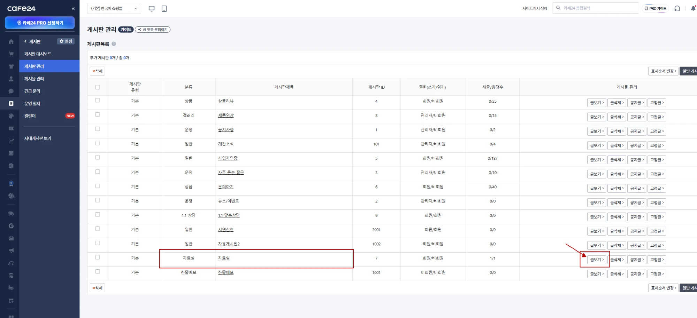
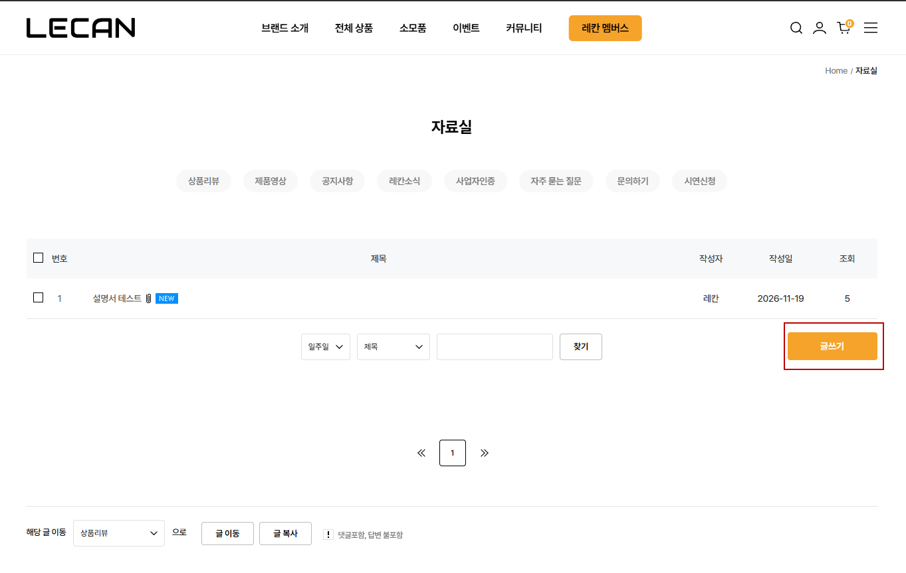
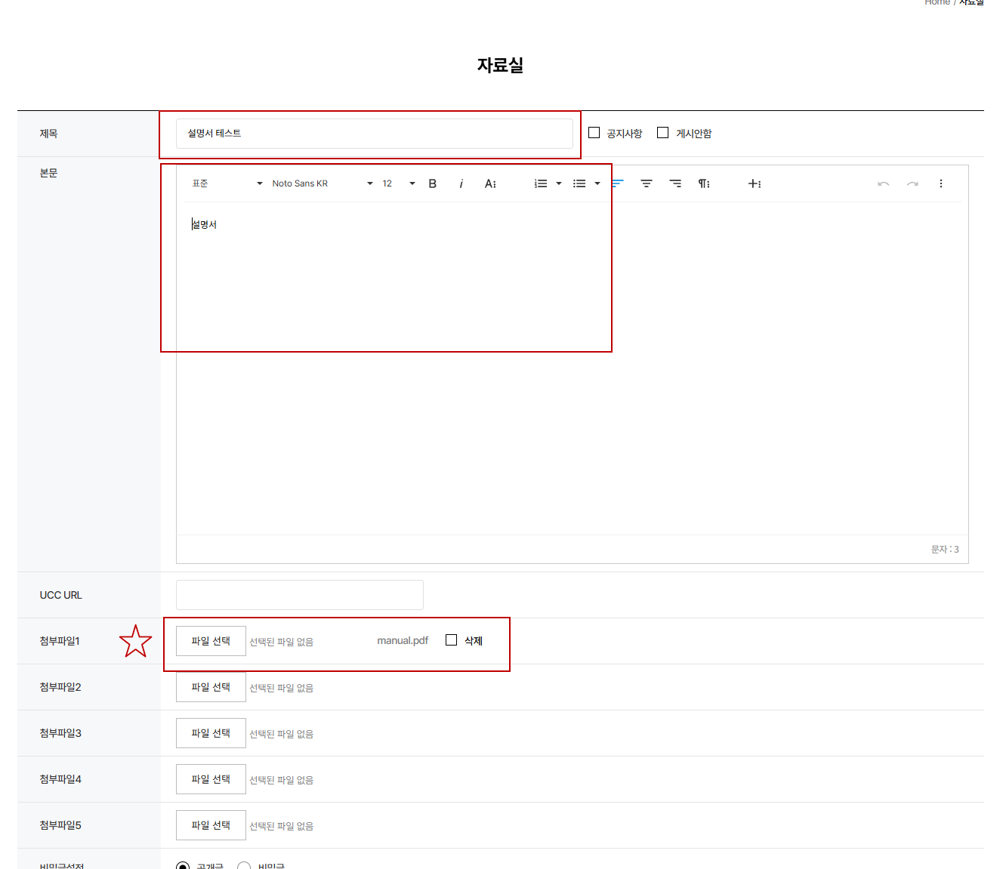
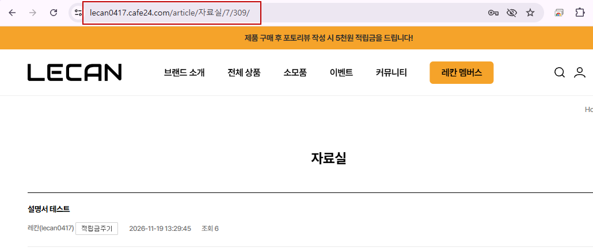
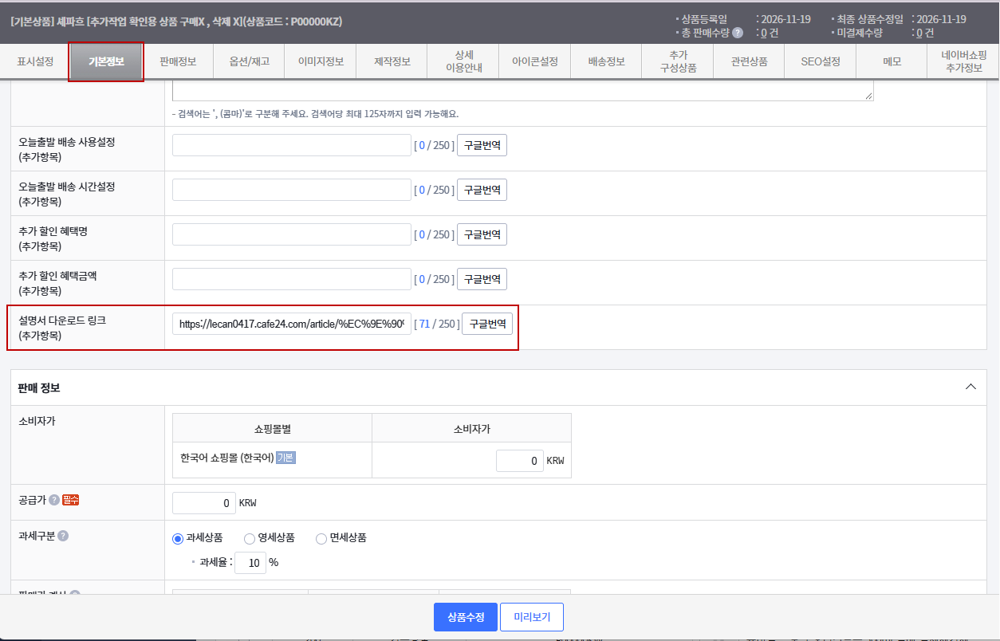
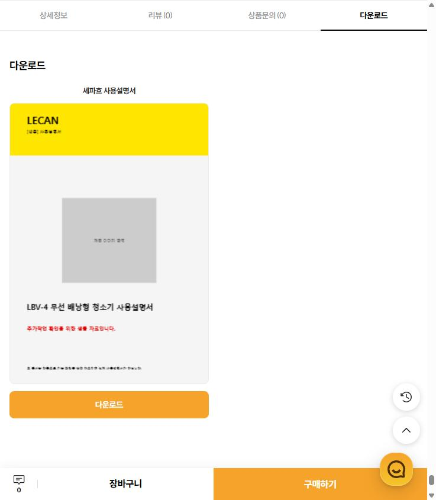

STEP 1
자료실에 PDF 올리기
쇼핑몰 파일 업로더나 FTP로는 PDF가 올라가지 않습니다. 자료실 게시판의 첨부파일로 올려주세요.
올릴 수 있는 파일은 PDF뿐입니다. 한글(.hwp), 워드(.docx), 엑셀, 이미지, 압축(.zip) 파일은 첨부해도 다운로드 탭에 표시되지 않습니다.
설명서가 다른 형식이라면 프로그램의 [PDF로 저장] 또는 [다른 이름으로 저장 > PDF] 기능으로 PDF로 바꿔서 올려주세요.
설명서가 다른 형식이라면 프로그램의 [PDF로 저장] 또는 [다른 이름으로 저장 > PDF] 기능으로 PDF로 바꿔서 올려주세요.
1
자료실 열기
관리자 게시판 관리에서 자료실 줄의 [글보기]를 누르면 자료실이 열립니다. (빨간 박스)

2
[글쓰기] 누르기
자료실 목록 오른쪽 아래의 주황색 [글쓰기] 버튼을 누릅니다.

3
제목 입력 후 PDF를 첨부파일로 올리기
- 제목·본문은 아무 내용이나 적으면 됩니다. (예: 상품명 사용설명서)
- 첨부파일1의 [파일 선택]으로 PDF를 올립니다. 본문 편집기에 넣지 말고 반드시 첨부파일 칸에 올려주세요.
- 파일명이 다운로드 카드의 제목으로 표시됩니다. 예)
SC2200PE 사용설명서.pdf - 첨부파일 1~5에 PDF를 여러 개 올리면 카드가 여러 장 나옵니다. PDF가 아닌 파일은 카드로 나오지 않습니다.

STEP 2
글 주소를 상품에 연결하기
저장한 글의 주소를 상품의 추가항목에 붙여넣으면, 스킨이 글에서 PDF를 찾아 다운로드 카드로 보여줍니다.
4
등록된 글의 주소 복사하기
저장한 글을 열고 브라우저 주소창의 주소 전체를 복사합니다. (빨간 박스)
예) https://lecan0417.cafe24.com/article/자료실/7/309/

5
상품 수정 > 기본정보 탭에서 붙여넣기
관리자 상품 > 상품 수정 화면에서 [기본정보] 탭을 열고, 아래쪽 설명서 다운로드 링크(추가항목) 칸에 복사한 주소를 붙여넣습니다. (빨간 박스)

이 추가항목은 삭제하거나 순서를 바꾸지 마세요. 스킨이 항목 번호로 연결되어 있어, 바뀌면 다운로드 탭이 나타나지 않을 수 있습니다.
STEP 3
결과 확인 · 주의사항
저장한 뒤 상품 페이지에서 확인합니다.
6
다운로드 탭 확인하기
- 상품 상세페이지에 다운로드 탭이 생기고, 설명서 표지 · 파일명 · 다운로드 버튼이 표시됩니다.
- 다운로드 버튼을 누르면 PDF가 바로 내려받아집니다.
- 카드 제목은 자료실에 올린 PDF 파일명(
.pdf제외)이 그대로 표시됩니다. 예)셰파흐 사용설명서.pdf→ 셰파흐 사용설명서 - 표지는 PDF의 첫 페이지가 자동으로 표시됩니다.
- 상품 페이지에서 Ctrl + F5로 새로고침해 확인합니다. 바로 반영되지 않으면 1~2분 뒤에 다시 확인해주세요.

7
꼭 알아두세요
자료실 글을 삭제하면 다운로드가 끊깁니다. 연결된 글은 지우지 말아주세요.
설명서를 교체하려면 자료실 글의 첨부파일을 바꿔 저장하세요. 글 주소가 같으면 상품의 추가항목은 그대로 두셔도 됩니다.
다운로드 탭을 없애려면 상품의 설명서 다운로드 링크(추가항목) 칸을 비우고 저장하세요.
8
다운로드 탭이 보이지 않을 때
- 상품 수정에서 [상품수정]을 눌러 저장했는지, 쇼핑몰에서 Ctrl + F5로 새로고침했는지 확인해주세요.
- 붙여넣은 주소가 자료실 글 주소(
.../article/자료실/7/글번호/)인지 확인해주세요. - 글의 첨부파일 칸에 PDF가 올라가 있는지 확인해주세요. 본문에 넣은 파일은 연결되지 않습니다.
- 올린 파일이 PDF(.pdf)인지 확인해주세요. 한글·워드 등 다른 형식만 있으면 탭이 나타나지 않습니다.
- 해당 자료실 글이 삭제되거나 비밀글로 바뀌지 않았는지 확인해주세요.
- 추가항목을 삭제하거나 순서를 바꾼 적이 있다면 모아스튜디오로 문의해주세요.
본 가이드는 모아스튜디오에서 제공하는 운영 가이드입니다.